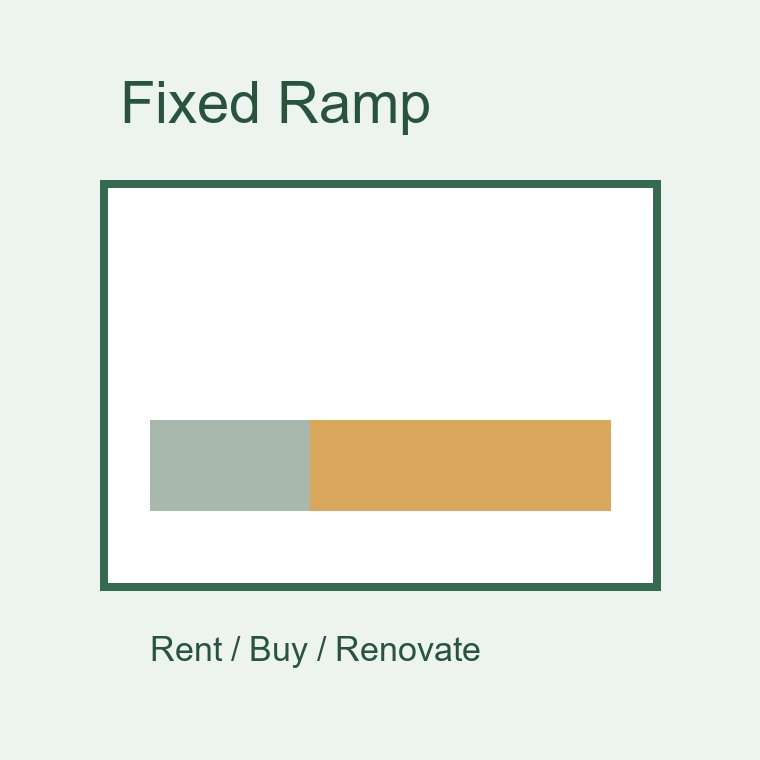
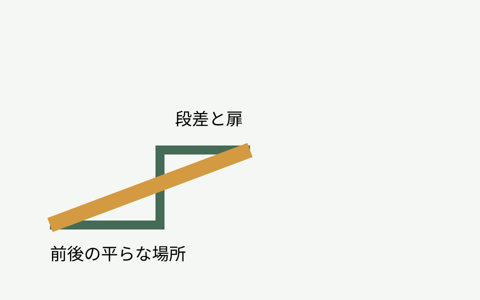
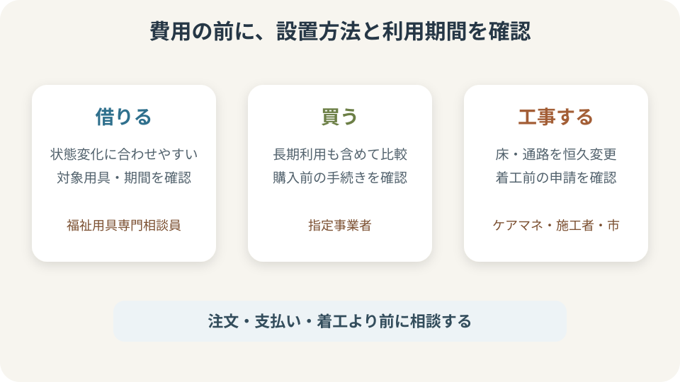

介護・住まい
磐田市の固定用スロープ｜借りる・買うを比較

Q. 玄関の段差に使う固定用スロープは、借りるのと買うのとどちらがよい？
A. 費用だけでは決められません。身体状況、利用期間、設置方法、住まいの条件を確認し、貸与・販売の選択制の対象か、住宅改修に当たるかを相談します。注文・支払い・工事の前に、ケアマネジャー、福祉用具専門相談員、磐田市へ確認してください。
固定用スロープを選ぶ前に段差の使い方を見る
玄関や室内の段差を越えるために固定用スロープを考えるとき、最初から製品を決めると、長さや幅が合わないことがあります。この記事は個別の福祉用具を推奨するものではありません。大石浩之（磐田市／不動産業）が、磐田市の公式案内を基に相談前の確認項目を整理します。
固定用スロープは、主に段差へ置いて通行を助ける福祉用具です。呼び方が似ていても、持ち運ぶ板、場所に固定して使うもの、工事で床や通路を変える方法では扱いが異なります。製品名だけで制度区分を決めず、設置方法を事業者へ説明します。
最初に、誰が、どの移動で、どの段差を越えたいかを書きます。本人が歩くのか、歩行器を使うのか、車いすを介助するのかで必要な幅や勾配は変わります。同じ玄関でも、上りと下り、雨の日、荷物を持つ場面で負担が違います。
段差の高さだけでは足りません。スロープを置く前後に平らな場所があるか、扉が開くか、通行人を妨げないかを見ます。共用廊下や道路へはみ出す可能性がある場合は、自己判断で置かず、所有者や管理者を含めて確認します。
今日の目的は、借りるか買うかを即決することではありません。身体状況、利用期間、設置場所、住まいの権利関係を一枚にまとめ、相談先へ持っていける状態にすることです。

介護保険では貸与と販売を選べる用具がある
磐田市の福祉用具に関する案内を読むときは、福祉用具貸与、特定福祉用具販売、住宅改修を別の制度として開きます。固定用スロープは、制度改正により一部の用具で貸与と販売の選択制が関係するため、対象となる製品かを確認します。
選択制は、利用者が説明を受けず自由に制度を付け替えるという意味ではありません。身体状況、使用目的、利用期間などを踏まえ、福祉用具専門相談員やケアマネジャーと相談します。対象製品、給付条件、自己負担は最新の市公式情報で確認してください。
貸与では、状態の変化に応じて用具を見直しやすい面があります。購入では、長期に使う見込みや自分の物として管理する事情が考えられます。ただし費用だけを比べても、点検、交換、撤去、再選定の条件が違えば同じ比較になりません。
要介護・要支援の認定状況やケアプランとの関係もあります。家族が先に購入してから給付対象になると考えず、手続きの順序を確認します。販売事業者や用具が指定の対象か、必要な書類は何かを支払い前に聞きます。
介護保険を利用しない自費購入という選択もありますが、制度を使わない場合でも安全性の確認は必要です。通販画面の耐荷重や長さだけで決めず、使用者、介助者、住宅の寸法を合わせます。
借りる場合は変化への対応と返却条件を確かめる
借りる方法を考えるときは、月ごとの負担だけでなく、搬入、設置、点検、交換、返却までを確認します。身体状況が変わったときに長さや形を見直せるか、福祉用具専門相談員へ相談します。
短期間の利用見込みでも、具体的な終了日は決められないことがあります。「三か月だから貸与」と機械的に分けず、治療や生活の見通しをケアマネジャーなどと共有します。見通しが変わったら再検討できるよう、確認日をメモします。
貸与品を置いたまま、家族がテープやねじで独自に固定すると、契約や安全条件から外れる可能性があります。ずれが気になる場合は自分で加工せず、事業者へ連絡します。掃除のために動かせる範囲も聞いておきます。
屋外で使う場合は、雨、砂、落ち葉、凍結、強風などで状態が変わります。製品が屋外使用に適するか、濡れたときの扱い、日常点検の方法を説明書と事業者の説明で確認します。
返却するときに、誰が取り外し、住まいをどの状態へ戻すかも確認します。借家や集合住宅なら、共用部へ設置してよいか、管理者の同意が必要かを先に確かめます。

買う場合は長期利用と再調整を見込む
購入を考える場合は、何年使えば貸与より安いという計算だけで決めません。身体状況や介助方法が変わり、同じスロープが合わなくなることがあります。購入後の相談、点検、部品、処分の扱いを販売事業者へ聞きます。
選択制の対象として購入する場合は、支給申請の方法や時期を確認します。領収書や製品を示す書類が必要になることがあるため、購入前に市や担当者へ確認します。家族がネットで先に注文し、後から制度へ当てはめようとしないことが大切です。
固定用という名前でも、住宅へ恒久的な工事をする製品とは限りません。一方、ねじ止めや下地の加工が必要なら、福祉用具購入ではなく住宅改修との整理が必要な場合があります。設置方法の写真や図を見せて相談します。
購入品は本人の物になるため、使わなくなった後の保管や処分も家族の仕事になります。別の家族へ譲れば安全に使えると決めつけず、寸法、劣化、使用者の状態を改めて確認します。
私は、購入の利点を「返さなくてよい」だけにしないほうがよいと考えます。必要な期間、再調整の可能性、住まいの変更を並べ、それでも長く同じ条件で使う見込みがあるかを相談します。
住宅改修は工事前の申請と住まいの同意を確認する
段差そのものを解消する工事や、通路を作り替える方法は、福祉用具の貸与・販売と別に住宅改修の確認が必要です。磐田市の住宅改修案内で対象工事、申請の流れ、必要書類を確認します。
介護保険の住宅改修は、一般に工事前の確認が重要です。工事を始めてから申請すればよいと考えず、見積書や図面、理由書など市が求めるものを担当者と確認します。個別の対象可否はこの記事で判断できません。
持ち家でも、共有名義や家族の意向を確認します。借家では所有者の承諾や原状回復の扱いが関係します。分譲マンションの共用部分なら管理規約や管理組合への確認も必要です。
工事で段差がなくなっても、扉の動き、排水、滑りやすさ、車いすの回転場所など別の条件が残ります。完成後の移動を図でたどり、玄関の外から室内まで途切れず使えるかを考えます。
貸与品で試してから工事を検討できるか、担当者へ聞く方法もあります。ただし全ての場所で試用できるとは限りません。試用の可否、費用、期間、返却を事業者へ確認します。
良い点と、注文したい点
良い点は、固定用スロープのような一部の用具で、利用者の状態や希望に応じて貸与と販売を検討できることです。一つの方法へ固定せず、長期利用か、変化へ対応したいかを相談材料にできます。
福祉用具専門相談員が選定や説明に関わることも良い点です。家族がカタログだけで安全性を背負わず、身体と住まいを一緒に見てもらう入口があります。ケアマネジャーを含めて生活全体から考えられます。
注文したい点は、市の案内を初めて読む家族にとって、貸与、販売、住宅改修の境目が分かりにくいことです。同じ段差解消でも、置く、固定する、工事するで窓口や手順が変わります。
私は、製品写真と設置例だけでなく、「購入前」「工事前」に誰へ相談するかを一枚で示す案内があると助かると考えます。制度の名称を知らない家族でも、玄関の段差という困りごとから入れる表示を望みます。
大石の視点：安さよりやり直せる余地を見る
大石の視点では、貸与と購入の比較で最初に月額と販売額だけを並べません。身体状況は変わり、介助する家族の人数や住まいも変わるからです。合わなかったときに見直せる余地を費用と一緒に見ます。
一方で、長く同じ場所で使うなら、購入が生活に合う場合もあります。借りるほうが常に安全、買うほうが必ず得とは言えません。私は、本人が毎日どう移動し、誰が点検するかを答えられる方法を選びたいと思います。
迷いが残るのは、本人の使いやすさと家族の管理負担が一致しない場合です。本人は置いたままを望んでも、共用通路では毎回片づけが必要かもしれません。この違いを家族だけで我慢して埋めず、事業者や管理者へ相談します。
不動産の立場からも、建物へ手を入れる前に所有関係と承諾を確認します。安全のための工夫でも、無断で工事してよいわけではありません。制度手続きと住まいの同意を並行して確かめます。
対案・結論：四つの欄を持って相談する
対案・結論は、段差、使う人、使う期間、住まいの条件という四つの欄を一枚に書き、相談へ持っていくことです。段差は高さと前後の広さ、使う人は歩行や用具、期間は見通し、住まいは持ち家・借家・共用部を記します。
写真を撮る場合は、本人の顔や住所が分かる物を写さず、段差の全体と周辺が分かるようにします。メジャーを当てた写真だけで正確な選定ができるとは限らないため、事業者の確認方法に従います。
相談先が分からない場合は、担当のケアマネジャー、地域包括支援センター、市の介護保険担当窓口へ確認します。すでに福祉用具事業者を利用しているなら、固定用スロープの選択制と設置方法について説明を求めます。
支払い、注文、工事の前に、制度対象、必要書類、承諾、設置後の点検を確認します。今日すべてを決める必要はありません。四つの欄を埋めることが、借りる・買う・改修するを比べる出発点です。
相談メモには、本人が困る時間帯も書きます。朝は足が動きにくい、通院の帰宅時だけ車いすを使うなど、同じ段差でも場面で条件が変わります。最も楽な時間に一度通れたことだけで、毎日安全に使えるとは判断しません。
介助者が押す場合は、上りと下りで姿勢や力のかかり方が違います。本人だけでなく、普段介助する人が説明を受け、無理なく扱えるかを確認します。家族の身長や体力が違う場合も、全員が同じ方法で使えるとは限りません。
靴、杖、歩行器、車いすの種類が変われば必要な幅も変わります。現在使っている用具の名称や寸法が分かれば相談時に伝えます。将来使うかもしれない用具を家族だけで想定して過大な製品を選ぶのではなく、見直す時期を決めます。
段差の写真には、近くの手すり、照明、床材、排水口も含めます。スロープだけを拡大した写真では、扉や通路との干渉を判断しにくいためです。ただし写真で分からない傾きや下地は、現地確認を依頼します。
費用を比較するときは、自己負担だけでなく、制度外の付属品、搬入、工事、撤去の扱いを聞きます。見積書の項目が分からなければ、貸与費、購入費、施工費を分けて説明してもらいます。数字の安さだけで必要な作業を省きません。
複数の業者へ相談する場合は、同じ段差と同じ利用条件を伝えます。条件が違う見積もりを並べても比較できません。担当者の説明で前提が変わったら、メモを更新し、ほかの候補にも同じ条件で聞き直します。
設置後は、ずれ、がたつき、表面の汚れ、周囲の物を日常的に見ます。点検方法と連絡先を目につく場所へ残します。異常を見つけたら使用を続けながら様子を見るのではなく、本人の移動方法を確保したうえで事業者へ連絡します。
家族が良いと思う方法でも、本人が怖いと感じることがあります。試せる場合は、本人の感想を「使える」「使えない」の二択にせず、上り、下り、足元の見え方、介助者との距離を分けて聞きます。
玄関以外にも室内の敷居や勝手口があるなら、一か所の解消で生活全体が変わるかを考えます。優先順位を付け、毎日使う場所から相談します。すべてを同時に変えると、本人が新しい動線に慣れる負担も増える可能性があります。
制度の説明を聞いた日は、担当者名と確認日を残します。後で身体状況や住まいが変わったとき、どの条件で選んだかを振り返れます。家族間で説明を伝える場合も、推測を足さず、確認した内容と次に質問する内容を分けます。
固定用スロープのよくある質問
固定用スロープなら、必ず貸与と購入を自由に選べますか。対象となる用具や利用条件、手続きがあります。製品名だけで判断せず、福祉用具専門相談員、ケアマネジャー、市へ確認してください。
先にネットで買ってから介護保険を申請できますか。支払い後では必要な手順を満たせない可能性があります。購入前に、対象製品、指定事業者、申請方法、必要書類を確認してください。
玄関へねじで固定すれば福祉用具購入ですか。固定方法や工事内容により住宅改修との整理が必要な場合があります。写真や製品資料を示し、工事や購入の前に担当者へ確認してください。
借家やマンションの共用廊下へ置けますか。介護保険の対象とは別に、所有者の承諾や管理規約、避難経路などの確認が必要です。無断で設置せず、管理者へ相談してください。
参考にした公式情報
- 福祉用具の貸与・購入／磐田市（2026年9月29日確認）
- 住宅改修／磐田市（2026年9月29日確認）
- 介護保険における福祉用具／厚生労働省（2026年9月29日確認）
最終確認日：2026-09-29。本記事は非公式の案内です。制度、対象用具、負担、必要書類は変わる場合があります。注文、支払い、設置、工事の前に、磐田市公式ページと担当者へ確認してください。